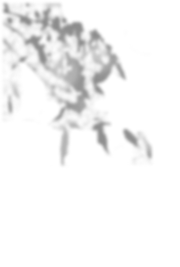
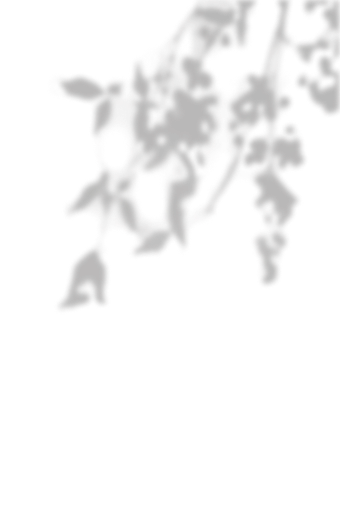
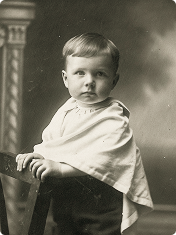
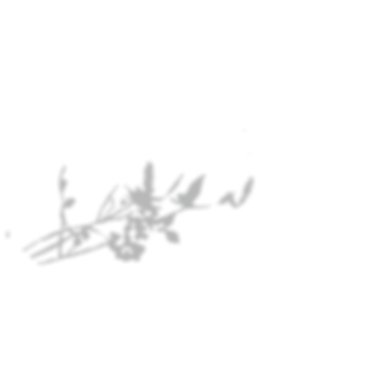
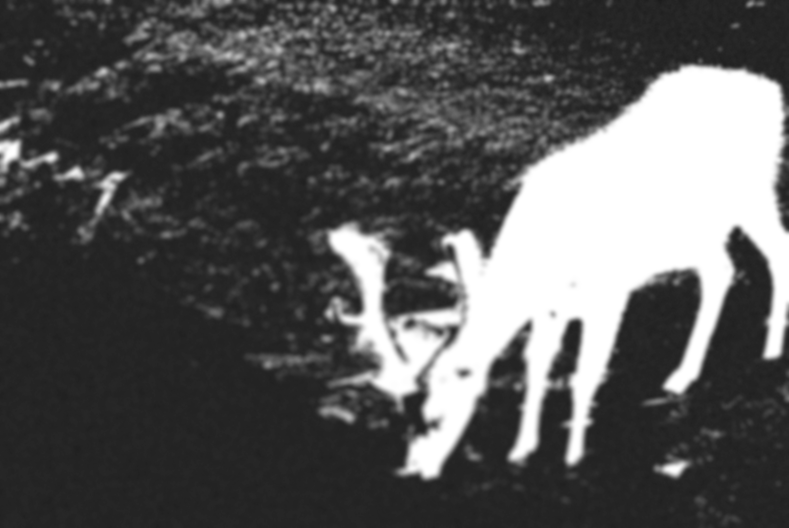
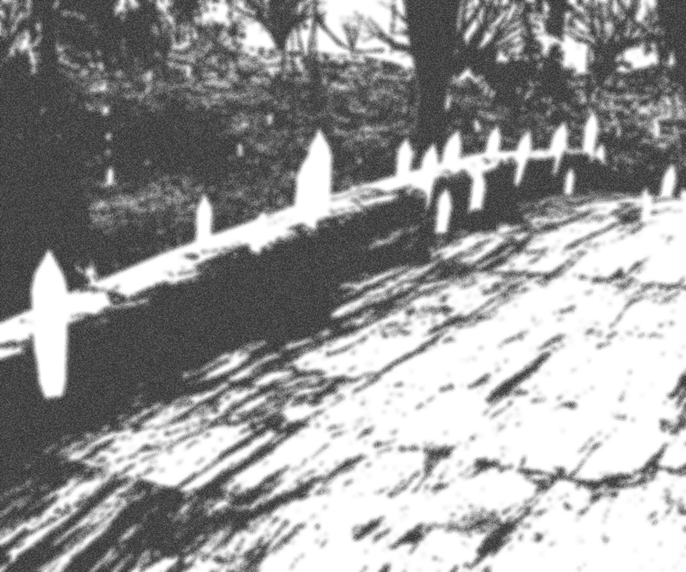
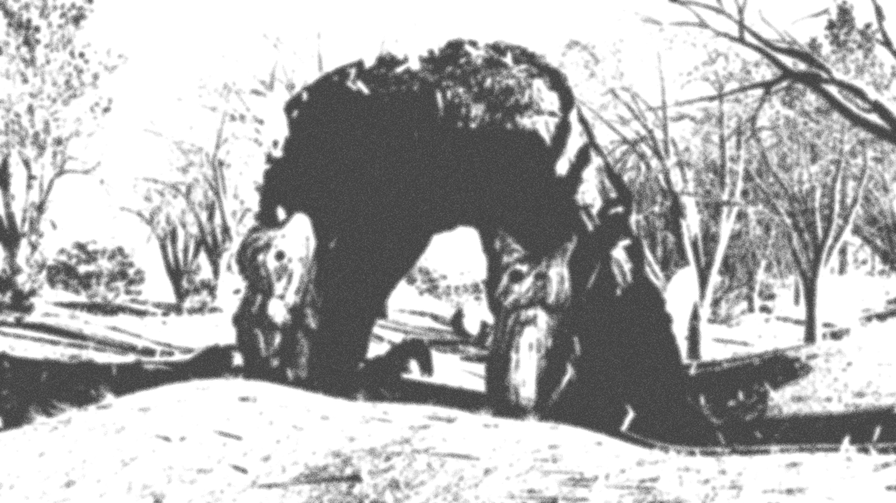
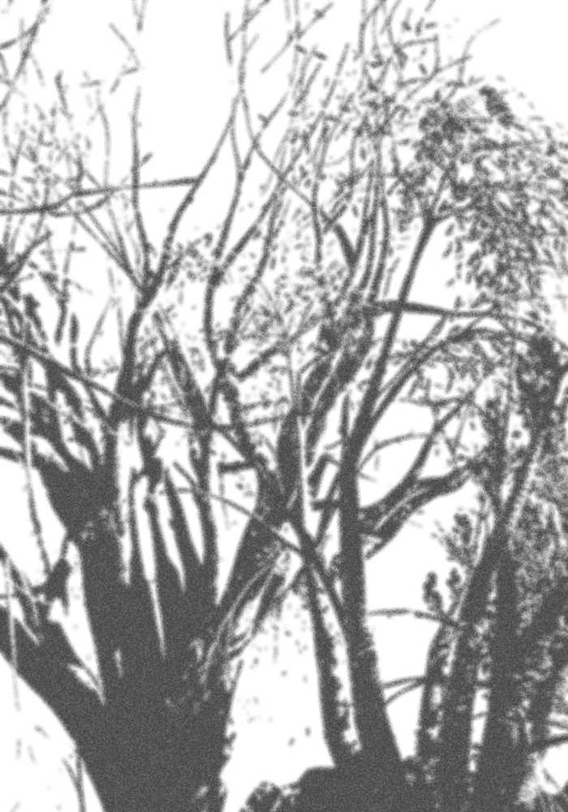
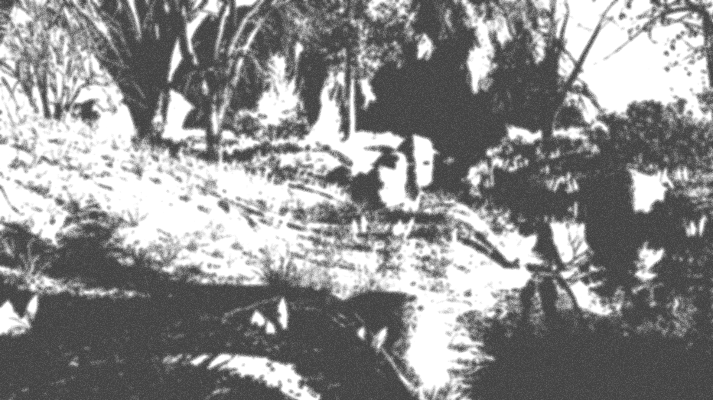

sound


Мы расскажем историю об основателе зоопарка
в честь юбилея
открытия holozoo

грань реальности cудьба исследователя голографический зоопарк
timeline Виктора Андоне

sound


Мы расскажем историю об основателе зоопарка
в честь юбилея
открытия holozoo
грань реальности cудьба исследователя голографический зоопарк
timeline Виктора Андоне

В самом юном возрасте Виктор Андоне увлекался природой
и
растениями, рисуя их на бумаге различными материалами, которые ему
очень нравились.

фото 1838г.
1874 год. цитата в личном дневнике

Думая, куда поступать, Виктор принял решение поступить в вуз
на факультет биологии и ботанки,продолжа своё изучение
в стенах универститета.
кедр
бансай
Аристотель
лисичка
мухомор
рибосома
цитоплазма
Аристотель
Дарвин
лопух
дуб
лиственник

В своих дневниках Виктор Андоне нераз упоминал о своей семье, описывая свою рутину он так же запечатлевал и их будни.
*протрите стекло



1867 год. цитата в личном дневнике
Найдя место, где обитают «голографические животные»,Виктор полностью посвятил себя изучению феномена holozoo
12.06

18.07

26.07

05.08

14.08

В конце своей жизни Виктор Андоне решил передать все свои исследования в наследство семье, а они решили показать всем людям красоту голографического зоопарка и открыли его для всех желающих.
*тыкните в любое место
1891 год. цитата в личном дневнике
Марванова Алина
Сергей Гриднев